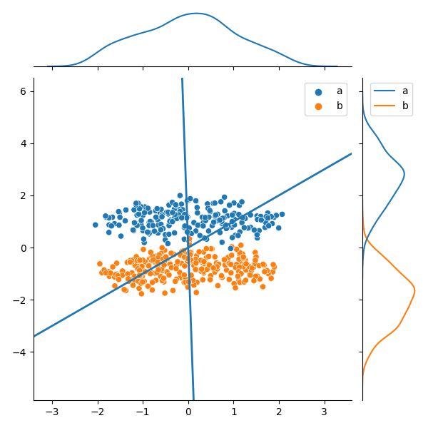

Note
Click here to download the full example code
PCA vs. LDA¶
2D to 1D with two classes.
9 10 11 12 13 14 15 16 17 18 19 20 21 22 23 24 25 26 27 28 29 30 31 32 33 34 35 36 37 38 39 40 41 42 | import pandas as pd
import seaborn as sns
import matplotlib.pyplot as plt
from sklearn.preprocessing import StandardScaler
from sklearn.decomposition import PCA
from sklearn.discriminant_analysis import LinearDiscriminantAnalysis
# Import data
df = pd.read_csv('data.csv')
X = df[['x', 'y']].to_numpy()
labels = df['label'].to_numpy()
X = StandardScaler().fit_transform(X)
# PCA: Get PC and transformed data
pca = PCA(n_components=1).fit(X)
pc_data = pca.transform(X).flatten()
pc = pca.components_[0]
# LDA: Get LD line and transformed data
lda = LinearDiscriminantAnalysis(n_components=1).fit(X, labels)
ld_data = lda.transform(X).flatten()
ld = lda.scalings_.flatten()
# PLot data
plot = sns.JointGrid()
sns.scatterplot(x=X[:,0], y=X[:,1], hue=labels, ax=plot.ax_joint)
sns.kdeplot(x=pc_data, ax=plot.ax_marg_x)
sns.kdeplot(y=-ld_data, hue=labels, ax=plot.ax_marg_y)
plot.ax_joint.axline((0,0), pc, linewidth=2)
plot.ax_joint.axline((0,0), ld, linewidth=2)
plt.show()
|
Total running time of the script: ( 0 minutes 0.257 seconds)